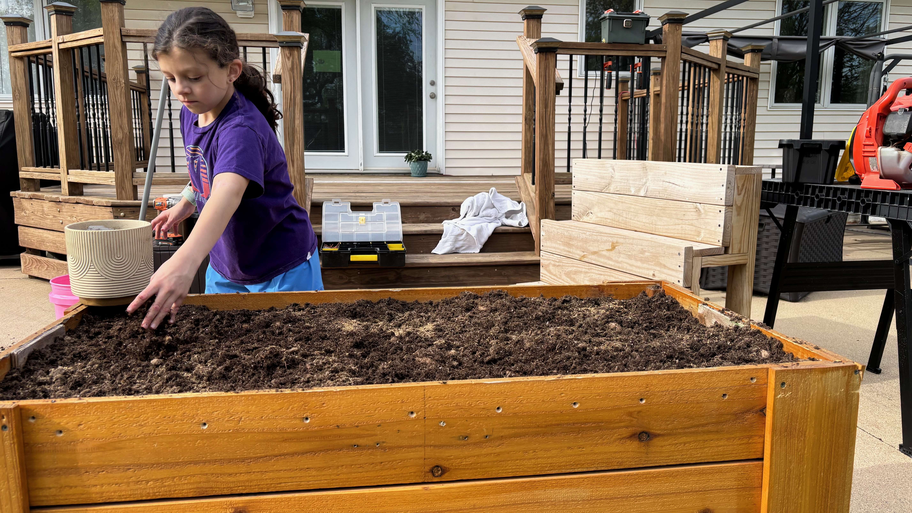

from datetime import datetime
from pathlib import Path
import re
import cv2
import numpy as np
import pandas as pd
np.set_printoptions(suppress=True, precision=8, linewidth=1000)
pd.set_option("display.max_columns", None)
pd.set_option("display.width", None)
image_dir = Path("wildflowers-2026")
first_date = datetime.strptime("2026-05-10", "%Y-%m-%d")
last_date = datetime.strptime("2026-08-01", "%Y-%m-%d")This spring, my daughter Liv and I created a time-lapse video documenting the growth cycle of the wildflowers we planted in the backyard. We built a weatherproof enclosure for a Raspberry Pi-powered camera and configured it to take a photograph every 30 minutes, from 5 a.m. to 10 p.m. each day, May 10th thru September 2. We used Picamera2 to capture the images, and the code to take the pictures was high-level enough that Liv was able to write it herself.
We attempted a similar project in 2025 to document the growth of our sunflowers, but the enclosure wasn’t sufficiently weatherproof and the camera was irreparably during an unusually powerful late-summer storm. I put a bit more thought into the design and construction of this year’s enclosure, and it was able to withstand the elements for the duration of the growth cycle.
In this post I’ll demonstrate how to create a time-lapse video from a collection of images using OpenCV. There may be better tools to do this, but I’m familiar with OpenCV and used this functionality in the past. Before diving into the details, here is the finished product. Each second of the video represents 24 still images, and the date each image was taken is printed in the lower left corner of each frame:
Creating the video is straightforward. The image paths are read into a DataFrame and parsed to extract the date and time the image was taken. Alternatively, we could access the EXIF detail associated with each image, but all necessary information is already embedded in the filename.
Filter to images that are not completely dark:
≈
excl_hours = [0, 1, 2, 3, 4, 5, 21, 22, 23]
incl_hours = [ii for ii in range(24) if ii not in excl_hours]
all_images = image_dir.glob("*.jpg")
parts = []
for image in all_images:
match = re.search(r'(\d{4}.\d{2}.\d{2})-(\d{2}.\d{2}.\d{2})', image.name)
date_str, time_str = match.groups()
dto = datetime.strptime(date_str + "-" + time_str, "%Y.%m.%d-%H.%M.%S")
parts.append({
"img_path": image,
"img_name": image.name,
"dto": dto,
"month": dto.month,
"day": dto.day,
"hour": dto.hour,
"minute": dto.minute,
})
df = pd.DataFrame(parts)
# Filter to non-mostly-dark images.
df = df[
(df['dto'].between(first_date, last_date)) &
(df.hour.isin(incl_hours))
]
# Sort by timestamp.
df = (
df
.sort_values("dto", ascending=True)
.reset_index(drop=True)
)
# Add datestamp column.
df["mmdd"] = \
df["month"].astype(str).str.zfill(2) + "-" + \
df["day"].astype(str).str.zfill(2)
print(f"df.shape: {df.shape}\n")
df.head(20)df.shape: (2480, 8)
| img_path | img_name | dto | month | day | hour | minute | mmdd | |
|---|---|---|---|---|---|---|---|---|
| 0 | wildflowers-2026/2026.05.10-12.47.21.jpg | 2026.05.10-12.47.21.jpg | 2026-05-10 12:47:21 | 5 | 10 | 12 | 47 | 05-10 |
| 1 | wildflowers-2026/2026.05.10-13.00.01.jpg | 2026.05.10-13.00.01.jpg | 2026-05-10 13:00:01 | 5 | 10 | 13 | 0 | 05-10 |
| 2 | wildflowers-2026/2026.05.10-13.20.55.jpg | 2026.05.10-13.20.55.jpg | 2026-05-10 13:20:55 | 5 | 10 | 13 | 20 | 05-10 |
| 3 | wildflowers-2026/2026.05.10-13.24.58.jpg | 2026.05.10-13.24.58.jpg | 2026-05-10 13:24:58 | 5 | 10 | 13 | 24 | 05-10 |
| 4 | wildflowers-2026/2026.05.10-13.27.44.jpg | 2026.05.10-13.27.44.jpg | 2026-05-10 13:27:44 | 5 | 10 | 13 | 27 | 05-10 |
| 5 | wildflowers-2026/2026.05.10-13.30.02.jpg | 2026.05.10-13.30.02.jpg | 2026-05-10 13:30:02 | 5 | 10 | 13 | 30 | 05-10 |
| 6 | wildflowers-2026/2026.05.10-14.00.01.jpg | 2026.05.10-14.00.01.jpg | 2026-05-10 14:00:01 | 5 | 10 | 14 | 0 | 05-10 |
| 7 | wildflowers-2026/2026.05.10-14.30.01.jpg | 2026.05.10-14.30.01.jpg | 2026-05-10 14:30:01 | 5 | 10 | 14 | 30 | 05-10 |
| 8 | wildflowers-2026/2026.05.10-15.00.02.jpg | 2026.05.10-15.00.02.jpg | 2026-05-10 15:00:02 | 5 | 10 | 15 | 0 | 05-10 |
| 9 | wildflowers-2026/2026.05.10-15.30.01.jpg | 2026.05.10-15.30.01.jpg | 2026-05-10 15:30:01 | 5 | 10 | 15 | 30 | 05-10 |
| 10 | wildflowers-2026/2026.05.10-16.00.01.jpg | 2026.05.10-16.00.01.jpg | 2026-05-10 16:00:01 | 5 | 10 | 16 | 0 | 05-10 |
| 11 | wildflowers-2026/2026.05.10-16.30.02.jpg | 2026.05.10-16.30.02.jpg | 2026-05-10 16:30:02 | 5 | 10 | 16 | 30 | 05-10 |
| 12 | wildflowers-2026/2026.05.10-17.00.02.jpg | 2026.05.10-17.00.02.jpg | 2026-05-10 17:00:02 | 5 | 10 | 17 | 0 | 05-10 |
| 13 | wildflowers-2026/2026.05.10-17.30.01.jpg | 2026.05.10-17.30.01.jpg | 2026-05-10 17:30:01 | 5 | 10 | 17 | 30 | 05-10 |
| 14 | wildflowers-2026/2026.05.10-18.00.01.jpg | 2026.05.10-18.00.01.jpg | 2026-05-10 18:00:01 | 5 | 10 | 18 | 0 | 05-10 |
| 15 | wildflowers-2026/2026.05.10-18.30.02.jpg | 2026.05.10-18.30.02.jpg | 2026-05-10 18:30:02 | 5 | 10 | 18 | 30 | 05-10 |
| 16 | wildflowers-2026/2026.05.10-19.00.01.jpg | 2026.05.10-19.00.01.jpg | 2026-05-10 19:00:01 | 5 | 10 | 19 | 0 | 05-10 |
| 17 | wildflowers-2026/2026.05.10-19.30.01.jpg | 2026.05.10-19.30.01.jpg | 2026-05-10 19:30:01 | 5 | 10 | 19 | 30 | 05-10 |
| 18 | wildflowers-2026/2026.05.10-20.00.01.jpg | 2026.05.10-20.00.01.jpg | 2026-05-10 20:00:01 | 5 | 10 | 20 | 0 | 05-10 |
| 19 | wildflowers-2026/2026.05.10-20.30.01.jpg | 2026.05.10-20.30.01.jpg | 2026-05-10 20:30:01 | 5 | 10 | 20 | 30 | 05-10 |

Specify fps, output path and font/font thickness. Initialize MP4 video writer and iterate over the image list, writing each to the writer object.
# Add timestamp to each frame.
add_ts = True
# Frames per second.
fps = 24
# Font for timestamp overlay.
font = cv2.FONT_HERSHEY_SIMPLEX
# Scale and thickness for timestamp overlay.
scale, thickness = 1.5, 3
# Output video path.
out_path = f"wildflowers-2026-{fps}-fps.mp4"
# Lists of paths and datestamps for each image.
paths = df["img_path"].astype(str).tolist()
dates = df["mmdd"].tolist()
n = len(paths)
# Read first frame to determine video dimensions.
first_frame = cv2.imread(paths[0], cv2.IMREAD_COLOR)
height, width = first_frame.shape[:2]
x, y = 10, height - 10
# Initialize MP4 video writer.
fourcc = cv2.VideoWriter_fourcc(*"mp4v")
writer = cv2.VideoWriter(
out_path,
fourcc,
float(fps),
(width, height),
)
for ii, (path, ds) in enumerate(zip(paths, dates), start=1):
frame = cv2.imread(path, cv2.IMREAD_COLOR)
if frame is None:
print(f"Skipping unreadable image: {path}")
continue
# Resize if image dimensions differ from first frame.
if frame.shape[:2] != (height, width):
frame = cv2.resize(
frame,
(width, height),
interpolation=cv2.INTER_AREA,
)
# Add timestamp.
if add_ts:
(tw, th), base = cv2.getTextSize(ds, font, scale, thickness)
cv2.rectangle(
frame, (x - 6, y - th - 6), (x + tw + 6, y + 6), (0, 0, 0), -1
)
cv2.putText(
frame, ds, (x, y), font, scale, (255, 255, 255), thickness, cv2.LINE_AA
)
writer.write(frame)
if ii % 100 == 0:
print(f"Processed {ii} / {n}")
writer.release()
print(f"Created {out_path}")Processed 100 / 2480
Processed 200 / 2480
Processed 300 / 2480
Processed 400 / 2480
Processed 500 / 2480
Processed 600 / 2480
Processed 700 / 2480
Processed 800 / 2480
Processed 900 / 2480
Processed 1000 / 2480
Processed 1100 / 2480
Processed 1200 / 2480
Processed 1300 / 2480
Processed 1400 / 2480
Processed 1500 / 2480
Processed 1600 / 2480
Processed 1700 / 2480
Processed 1800 / 2480
Processed 1900 / 2480
Processed 2000 / 2480
Processed 2100 / 2480
Processed 2200 / 2480
Processed 2300 / 2480
Processed 2400 / 2480
Created wildflowers-2026-24-fps.mp4The mp4s coming out of OpenCV are pretty large. For a 1:43 second video, the resulting filesize was ~5GB. ffmpeg can be used to compress the original output to something a bit more manageable:
ffmpeg -i wildflowers-2026-24-fps.mp4\
-c:v libx264 \
-preset slow \
-crf 20 \
-pix_fmt yuv420p \
-movflags +faststart \
wildflowers-2026-24-fps-compressed.mp4This reduced the filesize by 65%.
I also created a video of the images taken at 8am each morning, and slowed the progression to 3 fps: